How To Install and Configure GitLab on Ubuntu 16.04
Introduction
GitLab CE, or Community Edition, is an open source application primarily used to host Git repositories, with additional development-related features like issue tracking. It is designed to be hosted using your own infrastructure, and provides flexibility in deploying as an internal repository store for your development team, publicly as a way to interface with users, or even open as a way for contributors to host their own projects.
The GitLab project makes it relatively straight forward to set up a GitLab instance on your own hardware with an easy installation mechanism. In this guide, we will cover how to install and configure GitLab on an Ubuntu 16.04 server.
Prerequisites
This tutorial will assume that you have access to a fresh Ubuntu 16.04 server. The published GitLab hardware requirements recommend using a server with:
- 2 cores
- 4GB of RAM
Although you may be able to get by with substituting some swap space for RAM, it is not recommended. For this guide we will assume that you have the above resources as a minimum.
In order to get started, you will a non-root user with sudo
access configured on the server. It is also a good idea to set up a
basic firewall to provide an additional layer of security. You can
follow the steps in our Ubuntu 16.04 initial server setup guide to get this setup.
When you have satisfied the above prerequisites, continue on to start the installation procedure.
Installing the Dependencies
Before we can install GitLab itself, it is important to install some of the software that it leverages during installation and on an ongoing basis. Fortunately, all of the required software can be easily installed from Ubuntu's default package repositories.
Since this is our first time using apt during this session, we can refresh the local package index and then install the dependencies by typing:
- sudo apt-get update
- sudo apt-get install ca-certificates curl openssh-server postfix
You will likely have some of this software installed already. For the postfix installation, select Internet Site when prompted. On the next screen, enter your server's domain name or IP address to configure how the system will send mail.
Install GitLab
Now that the dependencies are in place, we can install GitLab itself. This is a straight forward process that leverages an installation script to configure your system with the GitLab repositories.
Move into the /tmp directory and then download the installation script:
- cd /tmp
- curl -LO https://packages.gitlab.com/install/repositories/gitlab/gitlab-ce/script.deb.sh
Feel free to examine the downloaded script to ensure that you are comfortable with the actions that it will take. You can also find a hosted version of the script here:
- less /tmp/script.deb.sh
Once you are satisfied with the safety of the script, run the installer:
- sudo bash /tmp/script.deb.sh
The script will set up your server to use the GitLab maintained
repositories. This lets you manage GitLab with the same package
management tools you use for your other system packages. Once this is
complete, you can install the actual GitLab application with apt:
- sudo apt-get install gitlab-ce
This will install the necessary components on your system. Before you can use the application, however, you need to run an initial configuration command:
- sudo gitlab-ctl reconfigure
This will initialize GitLab using information it can find about your server. This is a completely automated process, so you will not have to answer any prompts.
Adjusting the Firewall Rules
Before you can access the GitLab for the first time, you will need to
ensure that your firewall rules are permissive enough to allow normal
web traffic. If you followed the guide linked in the prerequisites, you
will have a ufw firewall enabled.
View the current status of your active firewall by typing:
- sudo ufw status
OutputStatus: active
To Action From
-- ------ ----
OpenSSH ALLOW Anywhere
OpenSSH (v6) ALLOW Anywhere (v6)
As you can see, the current rules allow SSH traffic through, but access to other services is restricted. Since GitLab is a web application, we should allow HTTP access in.
Since the protocol to port mapping for HTTP is available in the /etc/services
file, we can allow that traffic in by name. If you didn't already have
OpenSSH traffic enabled, you should allow that traffic now too:
- sudo ufw allow http
- sudo ufw allow OpenSSH
If you check the ufw status command again, you should see access configured to at least these two services:
- sudo ufw status
OutputStatus: active
To Action From
-- ------ ----
OpenSSH ALLOW Anywhere
80 ALLOW Anywhere
OpenSSH (v6) ALLOW Anywhere (v6)
80 (v6) ALLOW Anywhere (v6)
You should now be able to access the GitLab web interface.
Performing Initial Configuration Through the Web Interface
Now that GitLab is running and access is permitted, we can perform some initial configuration of the application through the web interface.
Logging In for the First Time
Visit the domain name of your GitLab server in your web browser:
http://gitlab_domain_or_IP
On your first time visiting, you should see an initial prompt to set a password for the administrative account:
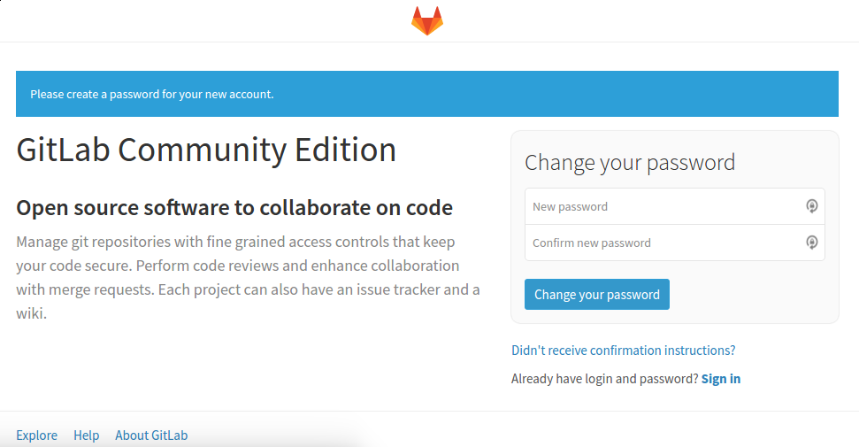
In the initial password prompt, supply and confirm a secure password for the administrative account. Click on the Change your password button when you are finished.
You will be redirected to the conventional GitLab login page:
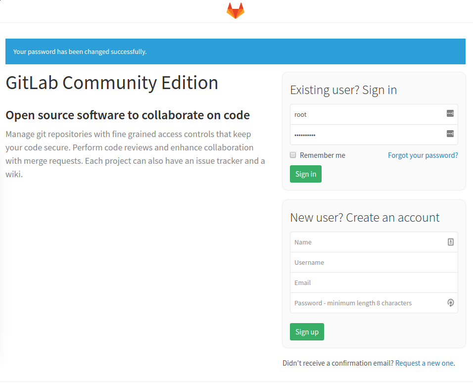
Here, you can log in with the password you just set. The credentials are:
- Username: root
- Password: [the password you set]
Enter these values into the fields for existing users and click the Sign in button. You will be signed into the application and taken to a landing page that prompts you to begin adding projects:
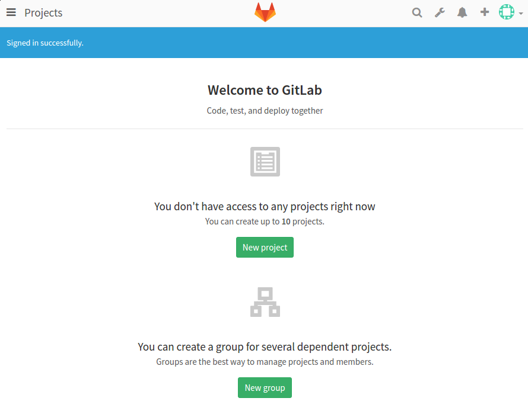
You can now make some simple changes to get GitLab set up the way you'd like.
Adjusting your Profile Settings
One of the first things that you should do after a fresh installation is to get your profile into better shape. GitLab selects some reasonable defaults, but these are not usually appropriate once you start using the software.
To make the necessary modifications, click on the user icon in the upper-right hand corner of the interface. In the drop down menu that appears, select Profile Settings:
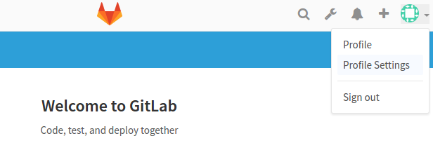
You will be taken to the Profile section of your settings:
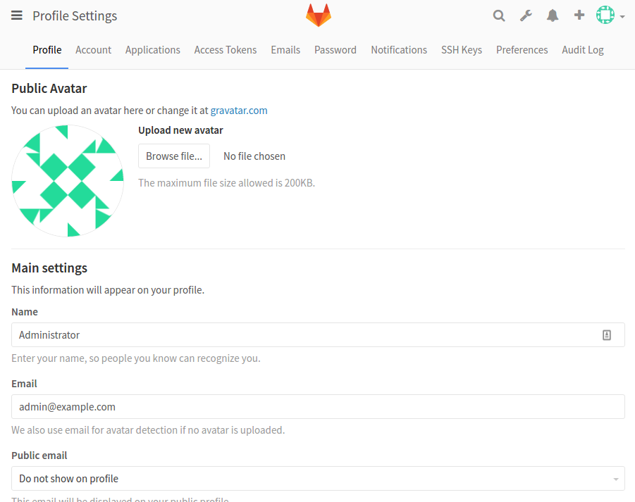
Adjust the Name and Email address from "Administrator" and "admin@example.com" to something more accurate. The name you select will be displayed to other users, while the email will be used for default avatar detection, notifications, Git actions through the interface, etc.
Click on the Update Profile settings button at the bottom when you are done:
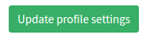
A confirmation email will be sent to the address you provided. Follow the instructions in the email to confirm your account so that you can begin using it with GitLab.
Changing Your Account Name
Next, click on the Account menu item at the top of the page:
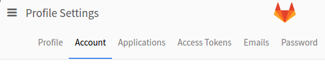
Here, you can find your private API token or configure two-factor authentication. However, the functionality we are interested in at the moment is the Change username section.
By default, the first administrative account is given the name root. Since this is a known account name, its more secure to change this a different name. You will still have administrative privileges; the only thing that will change is the name:
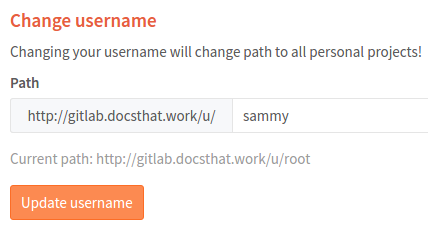
Click on the Update username button to make the change:
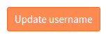
Next time you log in to the GitLab, remember to use your new username.
Add an SSH Key to your Account
In most cases, you will want to use SSH keys with Git to interact with your GitLab projects. To do this, you need to add your SSH public key to your GitLab account.
If you already have an SSH key pair created on your local computer, you can usually view the public key by typing:
- cat ~/.ssh/id_rsa.pub
You should see a large chunk of text, like this:
Outputssh-rsa AAAAB3NzaC1yc2EAAAADAQABAAABAQDMuyMtMl6aWwqBCvQx7YXvZd7bCFVDsyln3yh5/8Pu23LW88VXfJgsBvhZZ9W0rPBGYyzE/TDzwwITvVQcKrwQrvQlYxTVbqZQDlmsC41HnwDfGFXg+QouZemQ2YgMeHfBzy+w26/gg480nC2PPNd0OG79+e7gFVrTL79JA/MyePBugvYqOAbl30h7M1a7EHP3IV5DQUQg4YUq49v4d3AvM0aia4EUowJs0P/j83nsZt8yiE2JEYR03kDgT/qziPK7LnVFqpFDSPC3MR3b8B354E9Af4C/JHgvglv2tsxOyvKupyZonbyr68CqSorO2rAwY/jWFEiArIaVuDiR9YM5 sammy@mydesktop
Copy this text and head back to the Profile Settings page in GitLab's web interface.
If, instead, you get a message that looks like this, you do not yet have an SSH key pair configured on your machine:
Outputcat: /home/sammy/.ssh/id_rsa.pub: No such file or directory
If this is the case, you can create an SSH key pair by typing:
- ssh-keygen
Accept the defaults and optionally provide a password to secure the key locally:
OutputGenerating public/private rsa key pair.
Enter file in which to save the key (/home/sammy/.ssh/id_rsa):
Enter passphrase (empty for no passphrase):
Enter same passphrase again:
Your identification has been saved in /home/sammy/.ssh/id_rsa.
Your public key has been saved in /home/sammy/.ssh/id_rsa.pub.
The key fingerprint is:
SHA256:I8v5/M5xOicZRZq/XRcSBNxTQV2BZszjlWaIHi5chc0 sammy@gitlab.docsthat.work
The key's randomart image is:
+---[RSA 2048]----+
| ..%o==B|
| *.E =.|
| . ++= B |
| ooo.o . |
| . S .o . .|
| . + .. . o|
| + .o.o ..|
| o .++o . |
| oo=+ |
+----[SHA256]-----+
Once you have this, you can display your public key as above by typing:
- cat ~/.ssh/id_rsa.pub
Outputssh-rsa AAAAB3NzaC1yc2EAAAADAQABAAABAQDMuyMtMl6aWwqBCvQx7YXvZd7bCFVDsyln3yh5/8Pu23LW88VXfJgsBvhZZ9W0rPBGYyzE/TDzwwITvVQcKrwQrvQlYxTVbqZQDlmsC41HnwDfGFXg+QouZemQ2YgMeHfBzy+w26/gg480nC2PPNd0OG79+e7gFVrTL79JA/MyePBugvYqOAbl30h7M1a7EHP3IV5DQUQg4YUq49v4d3AvM0aia4EUowJs0P/j83nsZt8yiE2JEYR03kDgT/qziPK7LnVFqpFDSPC3MR3b8B354E9Af4C/JHgvglv2tsxOyvKupyZonbyr68CqSorO2rAwY/jWFEiArIaVuDiR9YM5 sammy@mydesktop
Copy the block of text that's displayed and head back to your Profile Settings in GitLab's web interface.
Click on the SSH Keys menu item in the top menu bar:
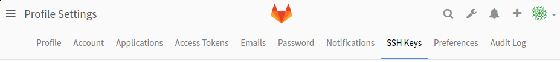
In the provides space paste the public key you copied from your local machine. Give it a descriptive title, and click the Add key button:
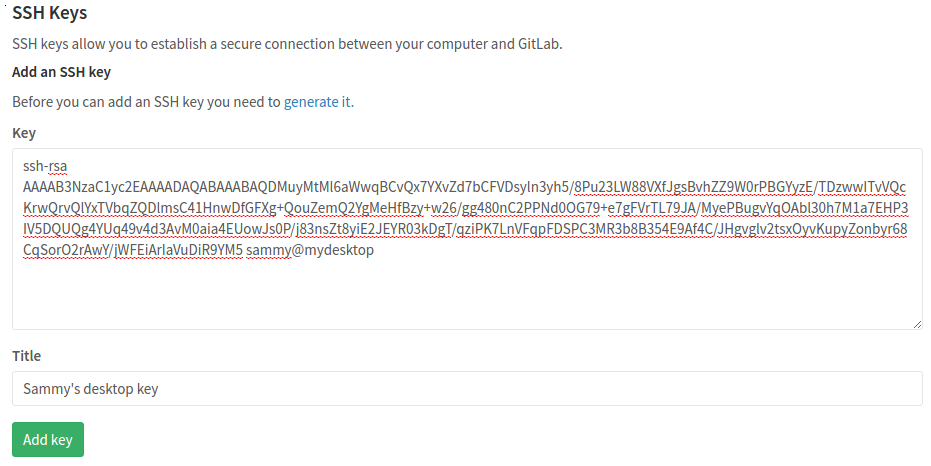
You should now be able to manage your GitLab projects and repositories from your local machine without having to provide your GitLab account credentials.
Restrict or Disable Public Sign-ups (Optional)
You may have noticed that it is possible for anyone to sign up for an account when you visit your GitLab instance's landing page. This may be what you want if you are looking to host public project. However, many times, more restrictive settings are desirable.
To begin, make your way to the administrative area by clicking on the wrench icon in the upper-right corner:
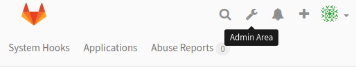
On the page that follows, you can see an overview of your GitLab instance as a whole. To adjust the settings, click on the gear icon in the upper-right corner and selecting Settings from the drop down menu that appears:
Note: At the time of writing (August, 2016), there is an outstanding issue with GitLab that affects the visibility of the settings icon at narrow screen widths. If you do not see the settings menu, try adjusting your browser window to full screen. You can also work around this issue by visiting your GitLab's setting page directly:
http://gitlab_domain_or_IP/admin/application_settings
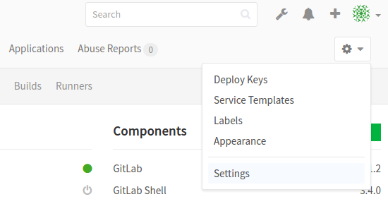
You will be taken to the global settings for your GitLab instance. Here, you can adjust a number of settings that affect whether new users can sign up and what their level of access will be.
Disabling Sign-ups
If you wish to disable sign-ups completely (you can still manually create accounts for new users), visit the Sign-up Restrictions section.
Deselect the Sign-up enabled check box:
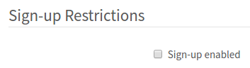
Scroll down to the bottom and click on the Save button:

The sign-up section should now be removed from the GitLab landing page.
Restrict Sign-ups By Domain
If you are using GitLab as part of an organization that provides email addresses associated with a domain, you can restrict sign-ups by domain instead of completely disabling them.
In the Sign-up Restrictions section, first select the Send confirmation email on sign-up box only allow users to log in after they've confirmed their email.
Next, add your domain or domains to the Whitelisted domains for sign-ups box, one per line. You can use the asterisk "*" to specify wildcard domains:
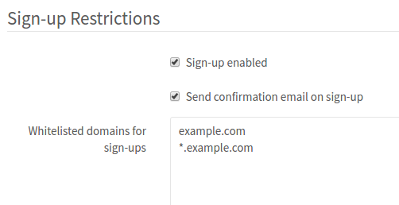
Scroll down to the bottom and click on the Save button:
The sign-up section should now be removed from the GitLab landing page.
Restricting Project Creation
By default, new users can create up to 10 projects. If you wish to allow new users from the outside for visibility and participation, but want to restrict their access to creating new projects, you can do so in the Account and Limit Settings section.
Inside, you can change the Default projects limit to 0 to completely disable new users from creating projects:
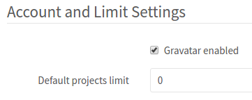
New users can still be added to projects manually and will have access to internal or public projects created by other users.
Scroll down to the bottom and click on the Save button:
New users will now be able to create accounts, but unable to create projects.
Conclusion
You should now have a working GitLab instance hosted on your own server. You can begin to import or create new projects and configure the appropriate level of access for your team.
Before going much further, you should configure SSL encryption for your GitLab server. Without SSL protection, your passwords and private details can be intercepted by anyone on the network. Luckily, with projects like Let's Encrypt, it is relatively straight forward to get a free, SSL certificate trusted by browsers. To learn how to get your GitLab instance set up with an SSL certificate, follow our guide on how to secure GitLab with Let's Encrypt.

{kind=link}
16 Comments